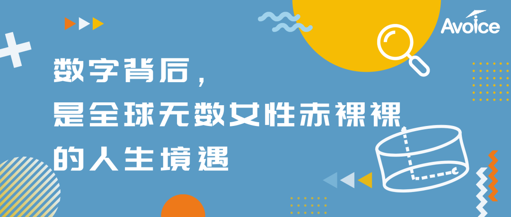
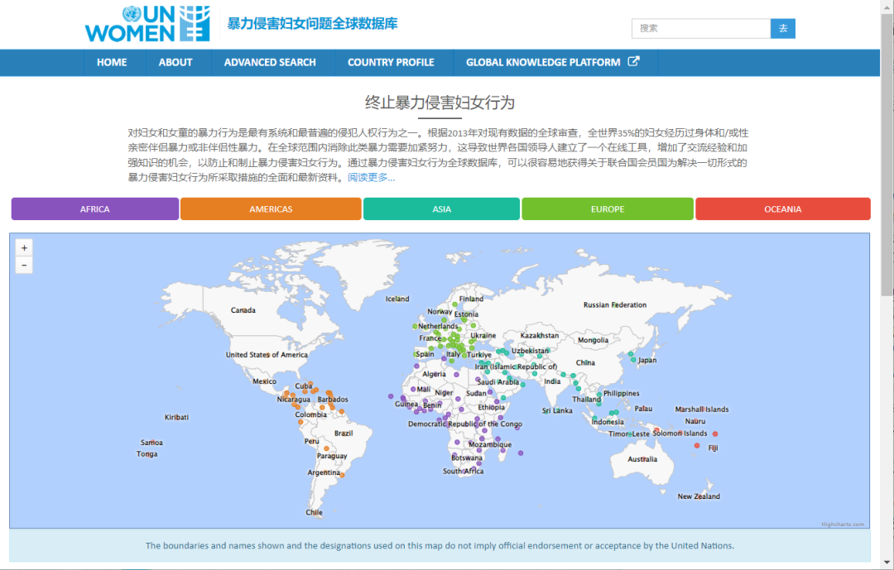
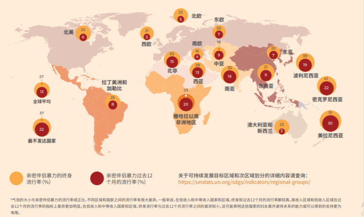
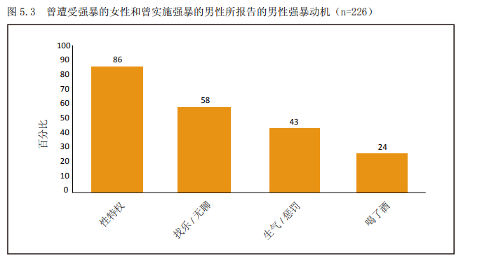

Sixteen years ago, the UN General Assembly adopted a resolution calling for intensified efforts to eliminate all forms of violence against women and requested the Secretary-General of the UN to establish a database to illustrate the extent, nature, and consequences of violence against women and to explore the effectiveness of policy programmes to eliminate violence. In 2009, the database was officially developed and launched as the United Nations Secretary-General's Database on Violence against Women. In 2016, UN Women updated and redesigned the database and renamed it the Global Database on Violence against Women, in the wake of the establishment of the 2030 Agenda for Sustainable Development.

Sixteen years after calling for the effort to eliminate gender violence, the COVID-19 pandemic has rocked the world, and violence against women has also increased since the pandemic. The World Health Organization has noted that rates of violence in intimate relationships have a tendency to increase during and after disasters. The COVID-19 pandemic has intensified the gender violence crisis to such an extent that the domestic violence surge can no longer be ignored.
Abuse is not love, control is not love, and ignoring disagreements is not love. Behind various acts of violence against women, the issues of discrimination and objectification need to be realized and addressed through advocacy and empathy. More attention needs to be paid to the issues in the status quo and people should gather their strength to actively change the status quo.
One of the most intuitive and comprehensive "windows" to understanding violence against women is statistics and data. To date, violence against women has been documented and validated in a number of global databases. In this article, Avoice will use numbers and empirical data to illustrate the pervasive problem of violence against women. This data comes from trustworthy and well-backed sources, and behind the figures are the real life experiences of countless women. Behind emotionless black-and-white data is the unbelievably arduous struggle that many women are experiencing.
It's not the numbers that are emotionless, it's the violence
As early as 1993, the United Nations defined the concept of "violence against women" in General Assembly resolution 48/104, Declaration on the Elimination of Violence against Women. It refers to "any act of gender-based violence that causes or is likely to cause physical, sexual or psychological harm or suffering to women, including threats, coercion or arbitrary deprivation of liberty, whether it occurs in public or private life." The number of acts of violence against women remains uncountable... what the media exposes is just the tip of the iceberg. Behind the huge numbers recorded in the database is an unimaginable dark world and deep wounds that have yet to be healed.01 Sexual violence: one in three women worldwide have experienced it
In 2021, the UN released the full report "Violence against Women Estimated 2018", which surveyed 1,266,758 women in 137 countries and territories (including 41 high income and 96 middle - and low-income countries and territories) during the Sustainable Development Goals period 2015-2030. The data directly confirms that violence against women is still prevalent. Today, violence against women aged 15 and above has become a global, large-scale epidemic affecting hundreds of millions of women.

The report mainly reports on two types of violence: intimate partner violence and non-partner sexual violence. Data shows that intimate partner violence -- violence (physical, sexual or psychological) by a husband or male intimate partner -- is the most prevalent form of violence against women worldwide.

The report calculates that in 2018, between 736 million and 852 million women aged 15 years and older (about one in three women worldwide) experienced at least one lifetime experience of physical and/or sexual violence from a current or former husband or male intimate partner, or sexual violence from a non-partner, stranger, acquaintance, peer, teacher, neighbor, family member, or both. In addition, intimate partner violence occurs earlier. It is estimated that almost one in four girls in the youngest age group, aged 15 to 19, who were married or in a relationship experience have experienced at least one intimate partner violence in their lifetime of physical and/or sexual violence, and 16% of girls and young women aged 15 to 24 had suffered intimate partner violence in the past 12 months.
02 Pushing and Slapping: One in Five EU Women Have Experienced
The EU released Violence against women: an EU-wide survey in March 2014. It is the first of its kind on this issue across the 28 member states of the EU based on interviews with 42,000 women who were asked about their experience of physical violence, sexual violence, psychological violence, stalking, and sexual harassment.
According to the survey, as far as non-partners are concerned, one in five women (22%) have experienced physical violence involving kicking, slapping, burning, pushing or shoving, cutting or stabbing, suffocating or strangling, grabbing or pulling by the hair, beating with a fist or a hard object or beating the head against something.
This horrific physical violence is often more than once. The figure shows that among the 4,872 respondents who have been pushed, about 19% have experienced six or more violent acts; those who have been slapped by the 3,292 respondents, 20 percent six times or more.
03 Follow-up Consequences: 75% of Men Have No Legal Treatments
The survey shows that (intimate) partner violence is widespread. Thirty-nine percent of ever-partnered women reported ever experiencing physical and/or sexual violence by an intimate partner. Fifty-two percent of ever-partnered men reported ever perpetrating physical and/or sexual violence against an intimate partner. However, among those men who had committed rape, 75 percent experienced no legal consequences.
As for motivations for rape, the most common was sexual entitlement (86%)–that they thought they had the right to have sex even by force, followed by fun/boredom (58%), anger/punishment (43%), and drinking alcohol (24%).

Also, among all the men interviewed, 73% believe that men have to be tough, 52% that they should defend their reputation with force if they have to, and 72% that men have greater decision-making power for essential things. These so-called “masculinities” are closely related to violent behaviors.
In addition, the survey also shows that among men who had acknowledged having raped a woman, 67% of them committed rape for the first time between the ages of 20 and 29, and 24% between 15 and 19. These facts suggest that education about sexual violence prevention and respect for women needs to begin in adolescence.
See Violence, Eliminate Violence, No Violence
Data on violence against women and unfair treatment goes far beyond the above. The latest data during the COVID-19 pandemic is also in urgent need of investigation and research by relevant agencies. According to the latest data from UN Women in 2022, during the pandemic, in addition to a higher probability of violence, women endure other hardships, including more difficult vaccinations, more challenging access to food, more unpaid care and housework, and reduced income. Behind the numbers are the tears shed by every female who has suffered violence. Truly “seeing” women and helping women in a timely and effective manner still has a long way to go when violence and unreasonable systems against women still exist worldwide, and the media are deluged with relevant issues. Just as the beginning indicates, abuse is not love, hegemony is not love, and ignoring contradictions is not love as well. Mary Beard writes in Women and Power, “You cannot easily fit women into a structure coded as male; you have to change the structure.” We must build a non-violent community full of love, empathy, and equality. May you and Avoice become the “light” to illuminate the world.References
- 联合国妇女署公众号《来自联合国，最新版 “针对妇女的暴力行为全球流行率估计”报告发布！》 https://mp.weixin.qq.com/s/O285OYtko4nEBtLRDb6CNA
- 欧盟《针对妇女的暴力：一项欧盟范围内的调查》 https://fra.europa.eu/sites/default/files/fra_uploads/fra-2014-vaw-survey-main-results-apr14_en.pdf
- 全球暴力侵害妇女问题全球数据库 https://evaw-global-database.unwomen.org/en
- 第四期中国妇女社会地位调查主要数据情况发布，中国妇女研究网 (wsic.ac.cn)
- 联合国妇女署官网
- 搜新源公众号《并非男性都是施暴者，但是女性都生活在系统性恐惧中 | 搜信源》